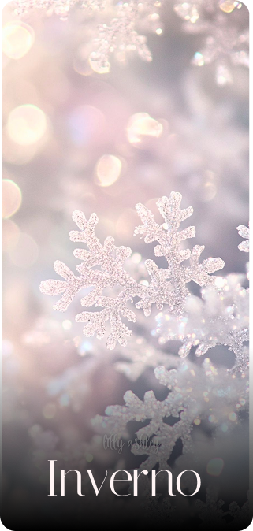

Coleção de outono
Inspirada nas cores aromas da estação, nossa coleção traz notas de vinho notas de vinho tinto, fruta secas especiarias e o calor acolhedor de elegancia.



Inspirada nas cores aromas da estação, nossa coleção traz notas de vinho notas de vinho tinto, fruta secas especiarias e o calor acolhedor de elegancia.